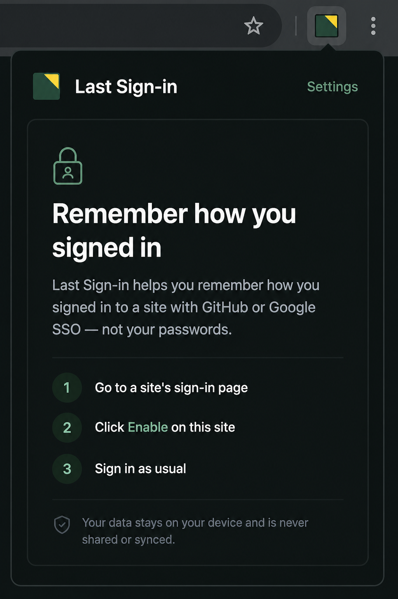
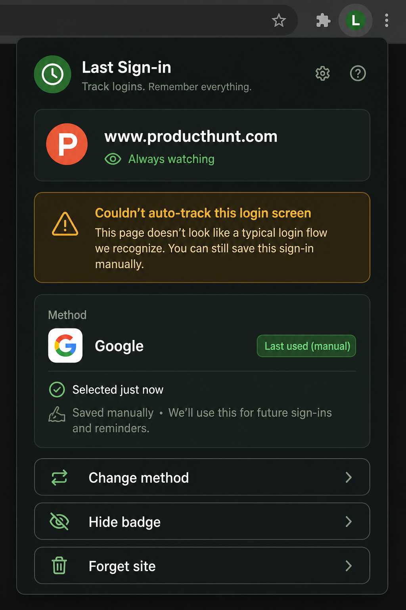
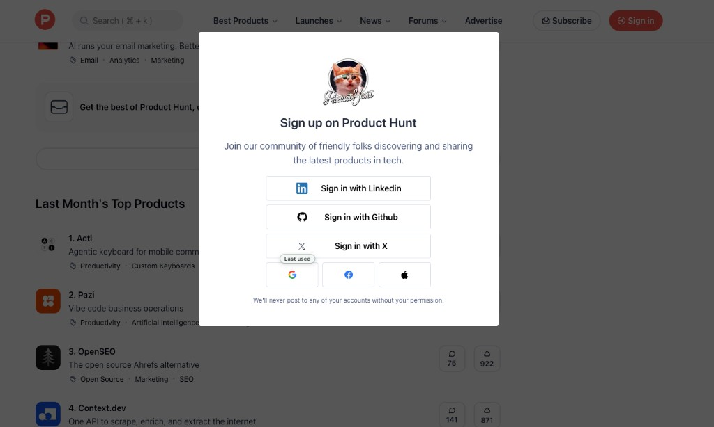
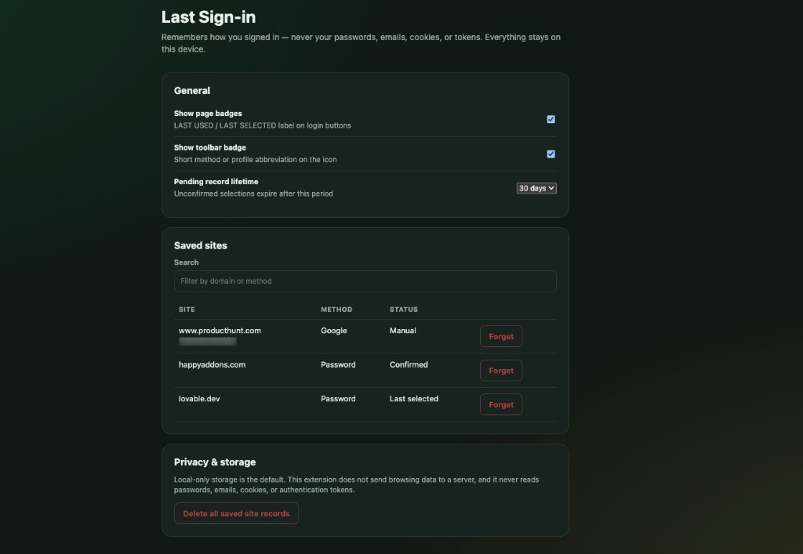

Without Last Sign-in
- Juggle Google / GitHub / SSO / password
- Forget which account path worked last time
- Retry until something sticks
Remembers how you signed in — Google, GitHub, SSO, password — never your passwords, emails, cookies, or tokens. Everything stays on this device.
You open a login screen with eight buttons. Last month it was Google. Or was it GitHub? Or the work email? You guess wrong, bounce through OAuth, and waste another minute. Password managers store secrets — they don’t tell you which method you used.
Welcome popup, settings, Product Hunt with a manual Last used badge, and the popup when auto-detect needs a hand.




Per-site enable. Method type only. Badges when we can; honest fallback when we can’t.
Unzip the release, open chrome://extensions, turn on
Developer mode, Load unpacked → select the folder with
manifest.json.
Click the extension → Enable on this site.
We try to mark the method you used. Next visit, look for LAST USED / LAST SELECTED.
Choose the method in the popup. Optionally add a name or email label as a local reminder. One save; reminders after that.
Some login UIs use icon-only buttons, shadow DOM, or canvas-heavy widgets. We can’t always pin a badge to the exact control — and we refuse to scrape passwords or emails to “guess harder.”
Built to be useful without pretending every site works like first-party “Last used” on Lovable or Supabase.
Icon-only OAuth and some custom auth UIs need Manual mode. That’s a feature of being privacy-safe, not a bug to paper over.
If you type a name/email into Manual mode, it’s a reminder label you chose — not scraped form data.
Firefox packaging exists in the toolchain but is not the polished line yet.
Nothing runs until you Enable on that site. No broad always-on scrape of the web.
Local-only storage. No analytics SDK. No Last Sign-in cloud. Full policy: privacy.md.
Origin, method type, optional label, timestamps, preferences.
Passwords, cookies, tokens, scraped emails, browsing history.
Forget one site or delete all records from Settings.
Grab the latest zip from GitHub Releases. Prefer official releases only.
last-sign-in-*-chrome.zip from
Releases.chrome://extensions → Developer mode → Load unpacked.manifest.json.Same quiet failure, over and over: I forgot which sign-in path I used last time, and I was juggling Google, GitHub, SSO, and password across work and side projects.
Session cookies expire. Sites offer five “Continue with…” buttons. Password managers fill secrets — they don’t point at the method. I kept guessing wrong.
A small local memory for method type only. Badges when possible. Manual + optional name/email label when auto can’t see the button. No cloud. No credential harvest.

WordPress product marketer · stubborn problem-solver · lifelong Harry Potter devotee
By day I am the Product Marketing Specialist at WPBakery. Before that, I helped a single plugin cross 400,000+ active users. When the day-job owl flies home, I tinker on my own workshop of spells.
Other tools from the same bench — free, local-first where it counts.
No. Never. Method type and optional labels you type yourself only.
Icon-only Google / Apple / Facebook buttons often can’t be pinned reliably. Save Google once with Manual — add a name/email label if you want — and you’re set.
Shipping via GitHub Releases first. Store draft lives in the repo
under docs/store-listing.md.
MIT. Free to use, fork, and share.
MIT-licensed. No ads. No Last Sign-in cloud. A GitHub star helps others find it. A small donation keeps the workshop lit.